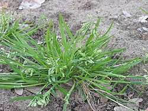

Grasss are plants
Grass refers to various families of plants. The three major families of grasslike plants are true grasses (Poaceae), sedges (Cyperaceae), and rushes (Juncaceae). Lawns and pasturelands are typically composed of true grasses, five of which cover 46% of the world's arable land: rice, wheat, maize, barley, and sugar cane.[1][2]
"Grass" as a name has been applied to a wide group of unrelated plants including herbaceous plants whose leaves and stems are eaten by domesticated and wild animals. The word may have its origin in the Proto-Indo-European root *gʰreh₁-, meaning 'to grow'.[3]